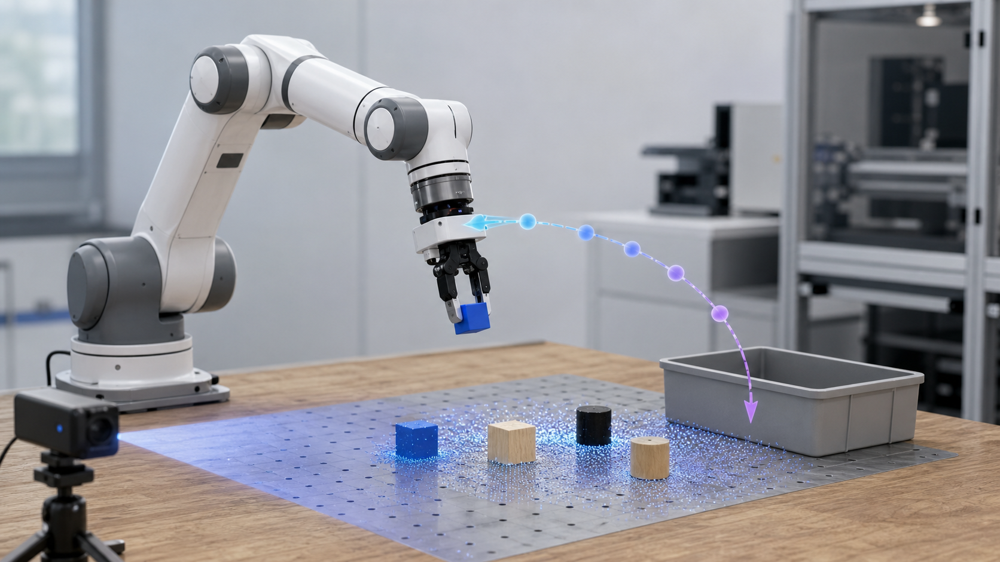

Method
Summarize the main algorithm, representation, controller, planner, model, or training procedure in one focused paragraph.
IEEE Robotics and Automation Letters · 2026
A crisp one-sentence summary of the robot task, the central method, and the strongest result.
1Your Lab, Your University · 2Collaborating Institute

Replace this paragraph with the paper abstract. For a project page, the first two sentences matter most: state the problem, then state why the proposed method changes the outcome. Follow with the key mechanism and the most convincing result in simulation or hardware.
Highlights
Summarize the main algorithm, representation, controller, planner, model, or training procedure in one focused paragraph.
Describe the robot platform, sensors, data pipeline, or deployment setup that makes the result reproducible.
Put the headline number here: success rate, speedup, accuracy, robustness, sample efficiency, or real-world generalization.
Demo
Approach
Observation, robot state, task specification, or dataset.
Latent model, affordance map, trajectory field, or policy state.
Planner, controller, policy output, or robot command.
Simulation benchmark, real-robot trials, or ablation protocol.
Experiments
Citation
@article{lastname2026paper,
title = {Paper Title Goes Here},
author = {Lastname, First and Collaborator, Second},
journal = {IEEE Robotics and Automation Letters},
year = {2026}
}